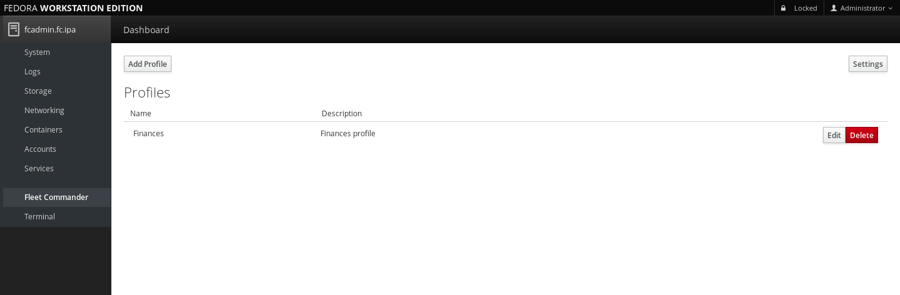

Overview
Fleet Commander is an application that allows you to manage the desktop configuration of a large network of users and workstations/laptops. It is primarily targeted to Linux systems based on the GNOME desktop.
Fleet Commander consists of three components:
- a FreeIPA plugin that allows to store profiles into your domain controller,
- a Cockpit plugin that serves the administration, interface
- a client side service that runs on every host of the network.
Fleet Commander uses libvirt and KVM to run a virtual desktop session that allows the user to live edit the configuration of the applications on a template system that resembles the client setup.
FreeIPA Plugin
In order to use Fleet Commander, you need an operative FreeIPA domain server. For more information on how to prepare a FreeIPA environment to use Fleet Commander, please refer to FreeIPA quick start guide
Once you have a FreeIPA environment working, you need to install the FreeIPA desktop profiles plugin on your domain server. In fedora, you can run the following command:
$ sudo dnf install freeipa-desktop-profile
After installing the package you should be able to check the plugin by running the following commands in a domain enrolled machine:
$ kinit admin
Password for admin@FC.IPA:
$ ipa deskprofileconfig-show
Priority of profile application: 1
Admin
Installation
Fleet commander admin is a Cockpit plugin, so you will need to follow these instructions to install Cockpit.
Make sure that cockpit is up and running. You can check it by pointing your browser to http://localhost:9090.
If it is not working you can try this:
$ sudo systemctl start cockpit
At this point, you should be able to access the cockpit interface in your browser.

Next step is to install fleet-commander-admin package:
$ sudo dnf install fleet-commander-admin
Usage
Starting out
We will assume that you have the cockpit service running and can access the Cockpit login page. If you need more information about setting up cockpit you can refer to http://cockpit-project.org/running.html cockpit documentation
Login with domain credentials for a user with administrative access or with access to desktop profiles management. Otherwise, you will not be able to use Fleet Commander Admin.
Click on the Fleet Commander option at cockpit sidebar, and you will see Fleet Commander loading screen.

The first time you use Fleet Commander, you will need to wait a few seconds to allow Fleet Commander Admin to set up the environment for the application. Please be patient.
Configure Fleet Commander
If this is the first time you’re using Fleet Commander you will be prompted to configure the global policy and libvirt host information for Fleet Commander.

You can access the settings using the Settings button.
Global policy
Fleet Commander allows you to setup a global policy for determining how to apply multiple profiles to same user / group / host / hostgroup.
In the selection box labeled Global policy you can select the precedence policy. The Default is User-Group-Host-Hostgroup, but you can change it to fit your needs.
Libvirt host
The Live session functionality of Fleet commander requires a working ssh connection to a libvirt host.
Click on the Settings button and fill in the appropriate input fields:
Fleet Commander virtual environment host - the hostname/ip of the libvirt host.
- Username for connection - Name of the user on the libvirt host.
- Libvirt mode - system or session. If you created the VMs using GNOME Boxes or the user does not have privileges, you will probably want to use the session mode.
- If you're using GNOME Boxes on the same host where cockpit and the Fleet Commander interface is running you will likely want to use localhost as the host, your own username as username and Session as Libvirt mode.
Fleet commander generates its own public key, which needs to be added to .ssh/authorized_keys for the appropriate user on the libvirt host.
The easier way to do that is to click on the Install public key button to install the public key. Fleet Commander will ask you for the user's password. Password will be only used for key installation and will not be stored anywhere.
Don't forget to start sshd on the libvirt host, otherwise, Fleet commander won't be able to connect.
If, for some reason, Fleet commander is unable to install the public key on the host, you can do it manually by clicking on the show button next to "Public key" and copying it to .ssh/authorized_hosts for the appropriate user on the host.
You should now be ready to use live sessions to edit profiles.
Managing profiles
After configuring Fleet Commander you will be able to create and manage your profiles.
You can add and remove profiles using the `Add Profile` button.
The screenshot below shows the profile list that contains all profiles you have created. Profiles can be edited or removed using the `Edit` and `Remove` buttons.

When you add or edit a profile, this is the information you can set up:
- Name: name of the profile
- Description: description of the profile
- Priority: priority of the profile (used to determine profile precedence)
- Users: users you want the profile to apply to
- Groups: same as Users, but for groups
- Hosts: hosts this profile will apply to.
- Host Groups: same as Hosts, but for groups of hosts
If you do not select any host or hostgroup for your profile, it will apply to every host in your domain.

Using live sessions
We will assume you have a working virtual environment host set up. If not, see [[#configure_libvirt_host|Configure libvirt host]]
When editing a profile, simply click on the `Live session` button. You will get a list of available VMs you can use as a template. If you don't see any VMs, you may need to add some - see [[#managing_template_vms|Managing template VMs]].

Clicking a VM will launch a volatile clone of it. Since the clone is volatile, all changes to the VM will be discarded on shutdown, meaning you can experiment without the fear of messing up the template VM.
After you've made some changes, click on the `Review and submit` button and select the changes you want to add to the profile.

Managing Template VMs
Fleet commander is tested and supported on Fedora, but you should be able to use any distribution. Setting up new template VMs is really simple, you just need to create a VM inside a libvirt/KVM hypervisor. For example, you can use GNOME Boxes.
In order to "report changes back" to Fleet commander, the VM itself must run Fleet Commander Logger. Start the VM and install fleet-commander-logger:
$ sudo dnf install fleet-commander-logger
Logger will automatically start after logging in, so there’s no need to enable it manually. When it starts it will check that a special device file is available in /dev/virtio-ports/, and if it does not exist, logger will not record any changes and simply quit as soon as it's started. That device file is created automatically by Fleet Commander when you start the template VM from Fleet Commander Admin interface.
Note that while it's technically possible to install logger directly inside a Fleet commander live session, your changes would be destroyed every time your turn off the VM.
Client
Fleet Commander Client is in charge of applying the changes from your profiles to the machines in your network.
To install it just execute the following command:
$ sudo dnf install fleet-commander-client
After installation it will be executed automatically when you login in a domain with Fleet Commander support, and will setup any configuration that applies to your user.
Troubleshooting admin problems
Before starting any troubleshooting with fleet commander, we strongly recommend you to add log_level = debug option to /etc/xdg/fleet-commander-admin.conf under [admin] section so you can use journalctl to see more verbose output.